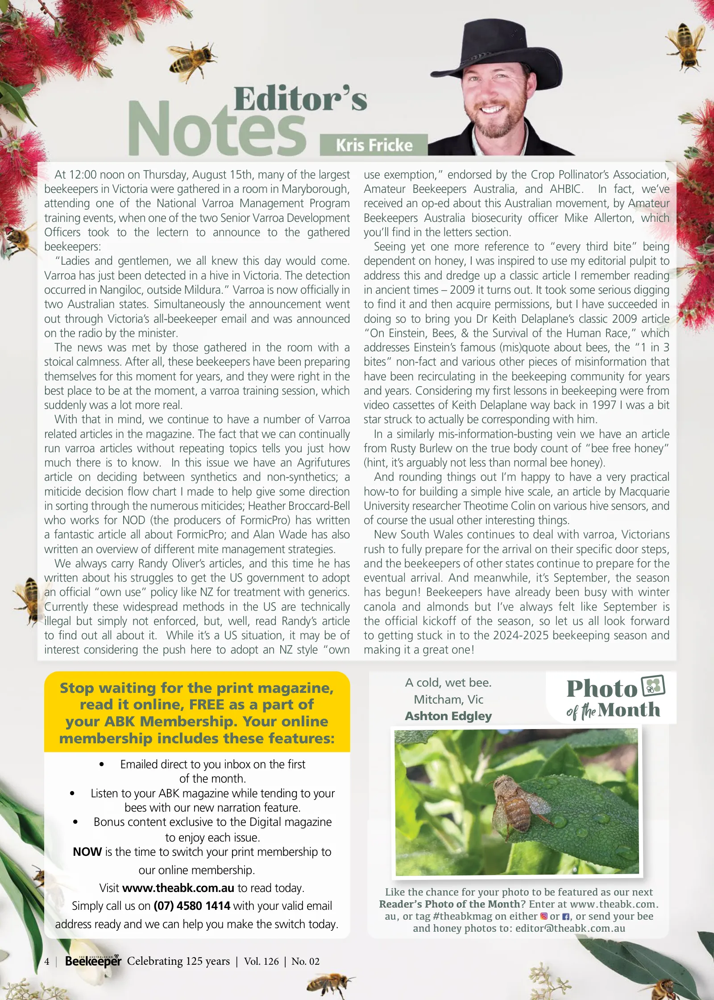

Like the chance for your photo to be featured as our next
Reader’s Photo of the Month? Enter at www.theabk.com.
au, or tag #theabkmag on either or , or send your bee
and honey photos to: editor@theabk.com.au
At 12:00 noon on Thursday, August 15th, many of the largest
beekeepers in Victoria were gathered in a room in Maryborough,
attending one of the National Varroa Management Program
training events, when one of the two Senior Varroa Development
Officers took to the lectern to announce to the gathered
beekeepers:
“Ladies and gentlemen, we all knew this day would come.
Varroa has just been detected in a hive in Victoria. The detection
occurred in Nangiloc, outside Mildura.” Varroa is now officially in
two Australian states. Simultaneously the announcement went
out through Victoria’s all-beekeeper email and was announced
on the radio by the minister.
The news was met by those gathered in the room with a
stoical calmness. After all, these beekeepers have been preparing
themselves for this moment for years, and they were right in the
best place to be at the moment, a varroa training session, which
suddenly was a lot more real.
With that in mind, we continue to have a number of Varroa
related articles in the magazine. The fact that we can continually
run varroa articles without repeating topics tells you just how
much there is to know. In this issue we have an Agrifutures
article on deciding between synthetics and non-synthetics; a
miticide decision flow chart I made to help give some direction
in sorting through the numerous miticides; Heather Broccard-Bell
who works for NOD (the producers of FormicPro) has written
a fantastic article all about FormicPro; and Alan Wade has also
written an overview of different mite management strategies.
We always carry Randy Oliver’s articles, and this time he has
written about his struggles to get the US government to adopt
an official “own use” policy like NZ for treatment with generics.
Currently these widespread methods in the US are technically
illegal but simply not enforced, but, well, read Randy’s article
to find out all about it. While it’s a US situation, it may be of
interest considering the push here to adopt an NZ style “own
A cold, wet bee.
Mitcham, Vic
Ashton Edgley
use exemption,” endorsed by the Crop Pollinator’s Association,
Amateur Beekeepers Australia, and AHBIC. In fact, we’ve
received an op-ed about this Australian movement, by Amateur
Beekeepers Australia biosecurity officer Mike Allerton, which
you’ll find in the letters section.
Seeing yet one more reference to “every third bite” being
dependent on honey, I was inspired to use my editorial pulpit to
address this and dredge up a classic article I remember reading
in ancient times – 2009 it turns out. It took some serious digging
to find it and then acquire permissions, but I have succeeded in
doing so to bring you Dr Keith Delaplane’s classic 2009 article
“On Einstein, Bees, & the Survival of the Human Race,” which
addresses Einstein’s famous (mis)quote about bees, the “1 in 3
bites” non-fact and various other pieces of misinformation that
have been recirculating in the beekeeping community for years
and years. Considering my first lessons in beekeeping were from
video cassettes of Keith Delaplane way back in 1997 I was a bit
star struck to actually be corresponding with him.
In a similarly mis-information-busting vein we have an article
from Rusty Burlew on the true body count of “bee free honey”
(hint, it’s arguably not less than normal bee honey).
And rounding things out I’m happy to have a very practical
how-to for building a simple hive scale, an article by Macquarie
University researcher Theotime Colin on various hive sensors, and
of course the usual other interesting things.
New South Wales continues to deal with varroa, Victorians
rush to fully prepare for the arrival on their specific door steps,
and the beekeepers of other states continue to prepare for the
eventual arrival. And meanwhile, it’s September, the season
has begun! Beekeepers have already been busy with winter
canola and almonds but I’ve always felt like September is
the official kickoff of the season, so let us all look forward
to getting stuck in to the 2024-2025 beekeeping season and
making it a great one!
Stop waiting for the print magazine,
read it online, FREE as a part of
your ABK Membership. Your online
membership includes these features:
•
Emailed direct to you inbox on the first
of the month.
•
Listen to your ABK magazine while tending to your
bees with our new narration feature.
•
Bonus content exclusive to the Digital magazine
to enjoy each issue.
NOW is the time to switch your print membership to
our online membership.
Visit www.theabk.com.au to read today.
Simply call us on (07) 4580 1414 with your valid email
address ready and we can help you make the switch today.
4 |
Celebrating 125 years | Vol. 126 | No. 02